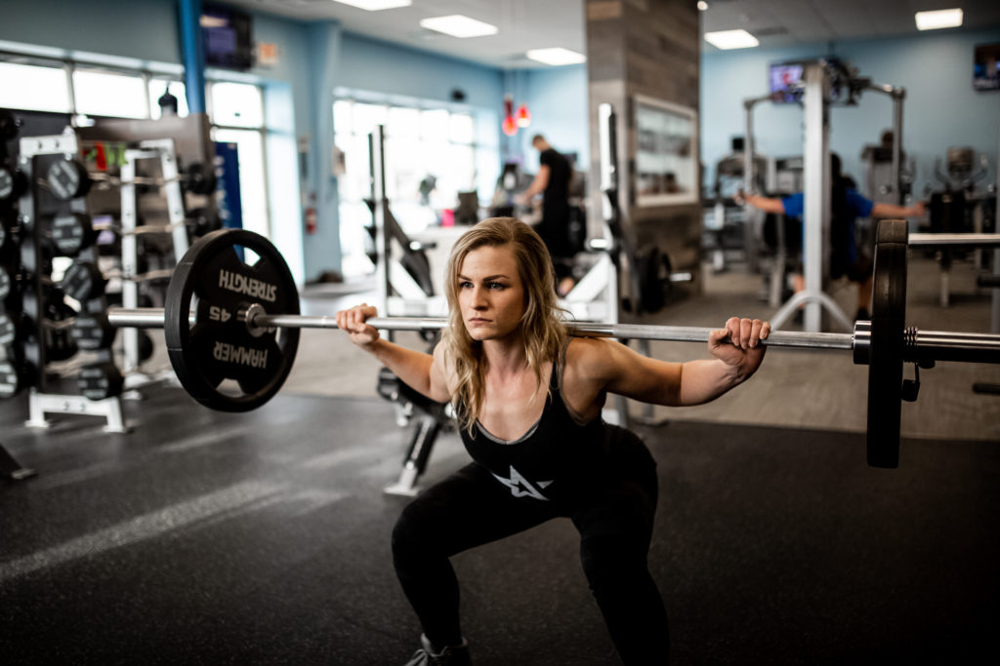
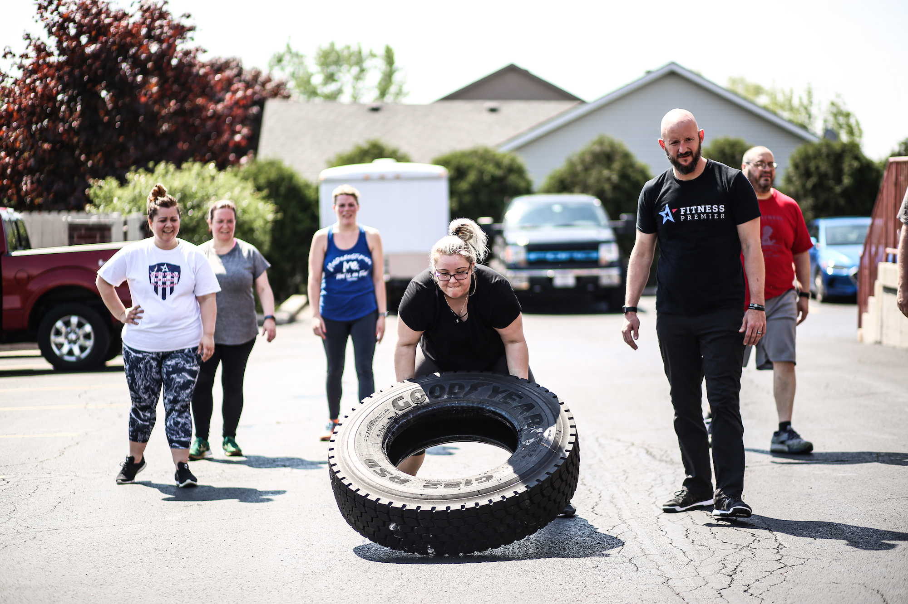
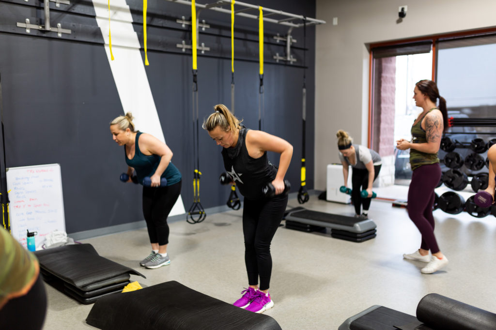
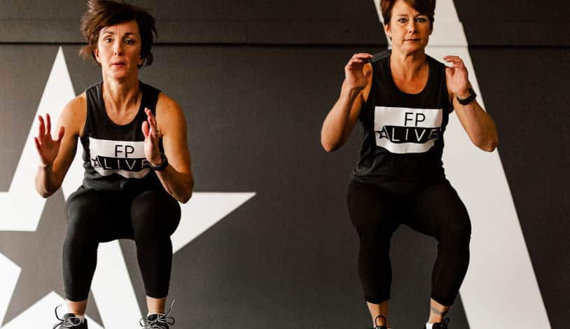

Whether you are new to the gym, a seasoned professional or looking to undo the damage of a sedentary lifestyle, our Coaches are devoted to redefining how you feel inside and out. We understand that no two bodies are alike and we will work to get you fit at the right pace for you! Our 1:1 coaches will utilize a holistic approach of exercise, nutrition and modified behavior to give you the tools you need to improve your daily lifestyle! Program design and coaching with your long term goal in mind.
Team Training is the workout designed for YOU! Tailored for anyone, at any fitness level- our Coaches will guide you out of your comfort zone and towards real results! We don’t just change bodies, we change lives and our mission starts with you. Team Training comes fully equipped with MyZone fitness tracking so that you can track and reward your efforts as you train. Join our community of teammates who want to see you succeed and will motivate you to be the best version of yourself. Our classes are safe, fun and effective- a triple threat to get the results you have been looking for!
Our group fitness classes provide you with access to instructor guided classes designed to improve your fitness and bring your personal journey to the next level. With multiple classes and programs you’re sure to discover a class that matches your workout style and goals.
Access our training classes on-demand, wherever you are. FP Live featres 9 unique classes designed to help you achieve your core fitness goals. From the action packed, muscle focused, FP STRONG – to the agility focused, athletic conditioning class FP SPORT, there are a lot of options for yout to choose from when you join FP Live.
